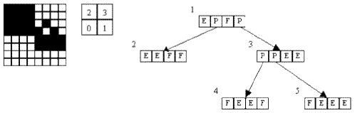

2D Representations
A 2D raster image is defined by a matrix of points or pixels. In a
black and white raster image, each pixel (a matrix element) can be black (full) or white
(empty). There are several methods known to represent a raster image. Two of them, are the
"Quadtree" and the "Run Length code".
In a Quadtree, the matrix is preferably square with a length that is a power of two. One
image is represented following a recursive visit: the image is divided in four image cells
(accordingly to the order shown in Figure 1) and each cell is evaluated to be Full, Empty,
or Partial. When a Partial cell is found, it is recursively subdivided in four cells and the
same principle is repeated again and again until the cell is completely Full or completely Empty.
The structure of a quadtree is a tree of nodes and each node can have from zero to four
descendents (see Figure 1).

Figure 1 - One image, the order of visit and the quadtree
In the Run Length code, pixels are grouped in series of empty pixels, full pixels and empty pixels again, etc. In this way, the image can be represented as a series of numbers, being each number of pixels in a group (we can assume that the first group is composed of full pixels). Using the image of Figure 1 as an example, the run length code is: 0, 20, 4, 4, 9, 1, 1, 1, 4, 1, 1, 2, 4, 4, 4, 4 (considering the lower left pixel as the first one).
Given an image in the form of a quadtree, the problem is to obtain the correspondent run length code. The image maximum size is 256*256 and the origin of coordinates is the lower left pixel.
The input begins with a single positive integer on a line by itself indicating the number of the cases following, each of them as described below. This line is followed by a blank line, and there is also a blank line between two consecutive inputs.
The first line of the input contains the length of the image and the second line contains the number of nodes N to be considered (both in integer format). Each one of the following N lines describes a different node (in sequence, starting with node 1), with four fields separated by a space. Each field may be one character F (full) or E (empty) or a number that is the index of a descendent node.
For each test case, the output must follow the description below. The outputs of two consecutive cases will be separated by a blank line.
One line with the run length code of the given image (integers separated by a space). Note that the first group is assumed to be Full.
Sample Input
1
8
5
E 2 F 3
E E F F
4 5 E E
F E E F
F E E E
Sample Output
0 20 4 4 9 1 1 1 4 1 1 2 4 4 4 4